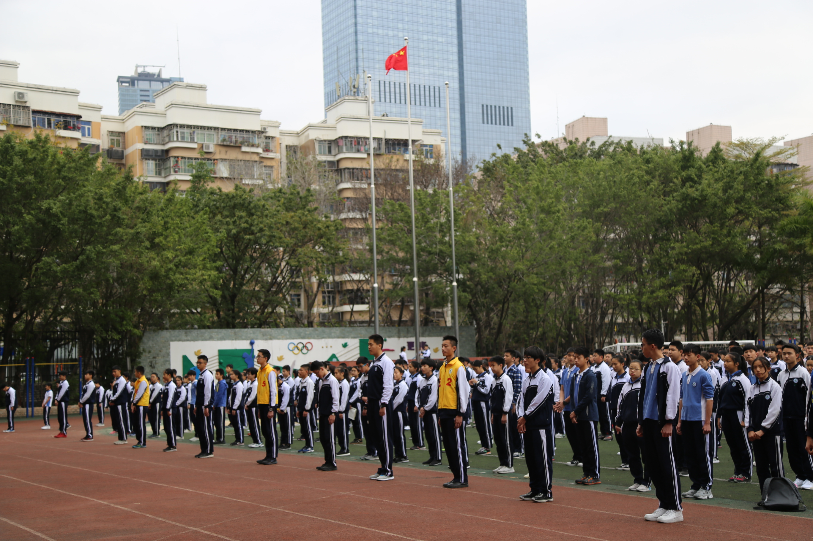
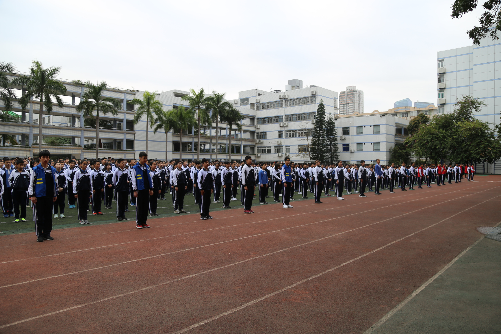
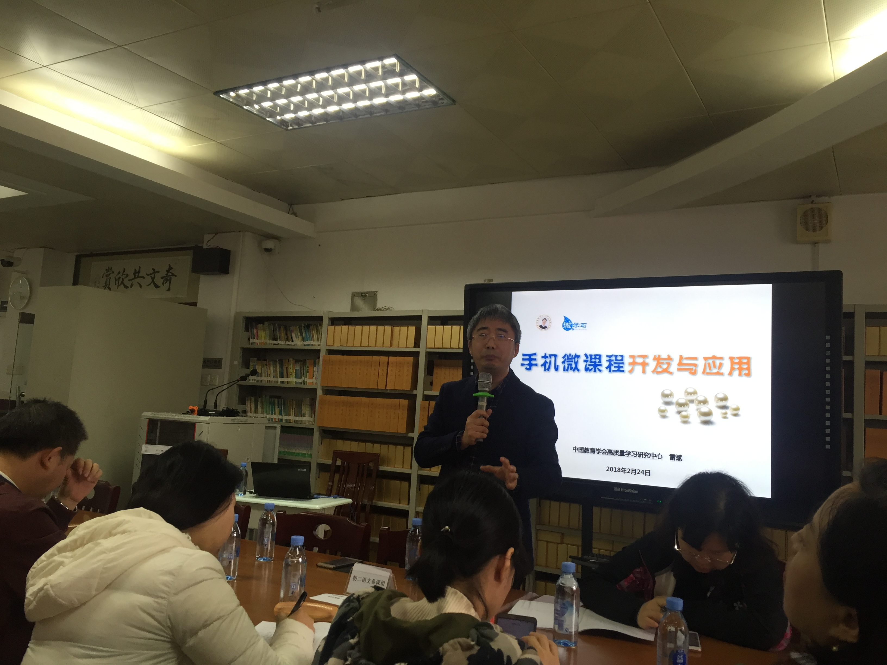
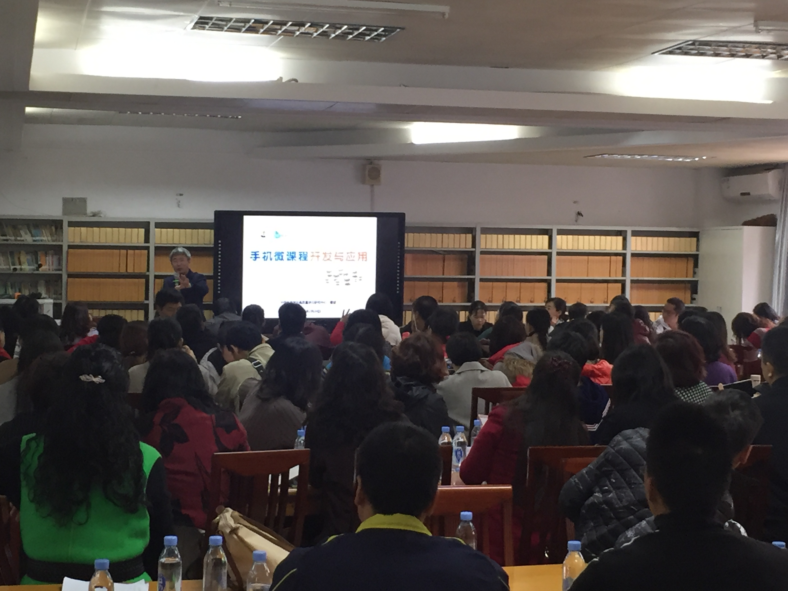
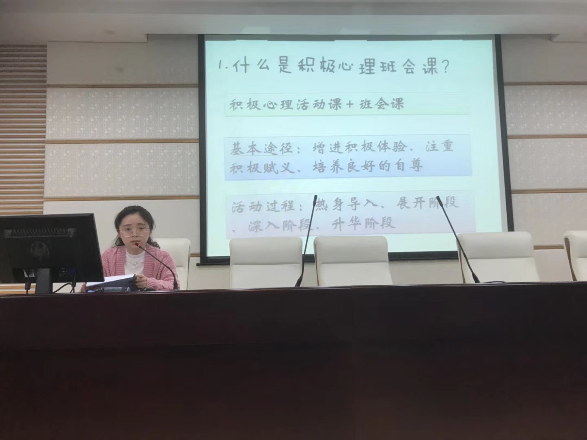

扬帆起航 砥砺前行
----我校开学工作有序展开
2月26日上午7:40，我校全体师生在操场整齐列队，进行了简短而庄重的开学典礼。徐连佳校长热情洋溢的讲话，为全体师生鼓足了干劲。


早在23日，新学期的序幕就已拉开，两校区行政干部召开了新学期工作会议，学校进行了全面的安全检查与整改，教辅、后勤做好了开学准备。24日的全体教职工开学会议改为培训与论坛：上午进行了手机微课的制作培训，老师们掌握现代技术，使微课广泛应用于孩子们的学习，更加方便的解决学生自适应学习随机问师的问题；下午两位老师分享了优秀上课案例，纪晓玲老师分享一堂心理辅导主题班会课，从学生期中考试自我分析中所反映的学习效率不高现象提出主题——《我的时间我做主》，精妙导入、切己体验、传授方法、总结升华。尹伊兰老师的英语课娴熟的运用同频技术、思维导图等现代工具，引用说唱的文娱形式，将短短的40分钟的课堂活化成精美无比、妙趣横生、承载丰富的师生思想碰撞的短剧。最后，徐校长解读了新学期工作计划，指出了本学期共同奋斗的目标。老师们说：收获满满！




新学期，同学们阳光、自信，状态良好。旨在为同学们诊断自己学习状况，制定新学期目标的全校开学测试也已有序展开。
2018年春季开学典礼校长致辞
深圳市福田区莲花中学 徐连佳
老师们、同学们：
经过一个寒假的休整和充实，踏着新春的旋律，我们又回到了美丽而又充满青春梦想的校园。寒往暑来，我们已经历多次这样开学场景，如果我们对人生没有系统思考，只是简单跟随大众的脚步，新的学期，新的一年你还会只是随性、任性而为。为此，我想向同学们探寻三个问题。
第一个问题：你拥有了人生梦想吗?梦想有神奇的力量。有一位匈牙利木材商的儿子，由于从小生的呆笨，人们都喊他木头。12岁时，他做了一个梦，他的作品被诺贝尔看上了。妈妈说，当上帝把一个不可能的梦，放在谁的心中时，就是真心想帮助谁完成的。“倘若我经得起考验，上帝会来帮助我的!”怀着这样的信念他开始了他的写作;靠着这样的信念他在奥斯维辛活了下来。
直到他差不多忘了那个梦的时候，瑞典皇家文学院宣布：把2002年诺贝尔文学奖授予匈牙利作家凯尔泰斯·伊姆雷。他听到后，大吃一惊，因为这正是他的名字。有梦想，成功之门才会为你开启;有梦想，人生才能真正属于自己。莲花中学是梦开始的地方，也是助你实现梦想的地方，只要有梦，莲花中学会给你一扇门，让你走到属于你自己的远方。希望同学们认真地审思、理性的定位：我这一生，将为什么而奋斗?
第二个问题：新学期，你制定了奋斗目标吗?“凡事预则立不预则废”，实现梦想的历程是需要规划的，当我们把它分解为一个一个阶段，每个阶段都有一个明确的目标时，梦想就显得不那么遥远了。当这些目标逐一实现——就像游戏打完了通关，你就成为了梦想中的最好的自己。多数同学一定在寒假期间就制定了新学期的目标，如果有人还没有，我看要抓紧了。
目标不要定的过高也不要让自己太轻松。坐标和目标的距离就是你新学期奋斗的轨迹。目标应该是具体、明确、清晰、可见的，你可以清楚自己是怎样越来越接近目标的，成就感和自信心就会伴随着你。弗洛伦丝·查德威——第一个往返游过英吉利海峡的女子。她在卡特里那海峡冰冷的海水里坚持游了将近16个小时之后，她想上船了。母亲在护卫船上鼓励她再坚持一会儿：“你已经离岸边很近了——你能游完全程的!”但弗洛伦丝看不到，放眼望去，只有浓雾。她被人拉上了护卫船。很快，她发现，她其实离岸边只有不到半英里了!不是疲劳，也不是冰冷的海水打败了她，而是大雾使她看不到自己的目的地。
可见，目标是努力的方向，是前进的动力，是精神的支柱，是指路的明灯。有一个清晰和确定目标的新学期生活一定是充实和富有意义的。
第三个问题：每一天，你准备为梦想打拼吗?仰望星空，脚踏实地，这也是走通现实和梦想的唯一的可行路径。集腋成裘、聚沙成塔是常常引用的成语，量变与质变的关系是放在嘴边的道理。然而身体力行实则不易，靡不有初，鲜克有终，唯智慧与刚毅之人能始终如一，铸大器、成正果。山鲁佐德讲述了一千零一夜的故事，才使山鲁亚尔幡然醒悟。居里夫人一天一天、一锅一锅地熬制，经过三年九个月才从一吨的废弃沥青中提炼出0.1克的镭。即使是那些看似最不寂寞的歌星、球星当年也曾在寂寞中坚持与守望。大家都知道，短道速滑男子500米冠军武大靖能够一天三破纪录，一骑绝尘为中国赢得平昌冬奥会第一枚也是唯一一枚金牌，是源于他每天坚持凌晨4点前的刻苦训练。
我们身边也不乏类似的例子，做过多少道题才能摘取那沉甸甸的金牌，克服多少次诱惑才能拥有门门过硬的文化成绩，剪过多少画纸，写过多少页宣纸，练过多少次动作，才能成为中外名校眼里的艺术特长?如此说来，我们梦想不在未来，而在当下。在认真聆听的每一堂课里，在认真阅读的每一页书里，在认真书写的每一张纸上，在认真思考的每一道题里，在认真参与的每一项活动里，在认真训练的每一项本领里……为了梦想，我们必须振奋精神投入每一天。
哈佛大学的图书馆有一条馆训：“如果现在睡觉，会做美梦；而现在读书，会美梦变成真。”。希望同学们从新学期的第一天、第一课、第一题、第一项活动开始，做一个“脑中有梦想、脸上有自信、心中有善良、骨头有硬度、脚下有路径，手中有办法”的新一代弄潮儿。
谢谢大家！